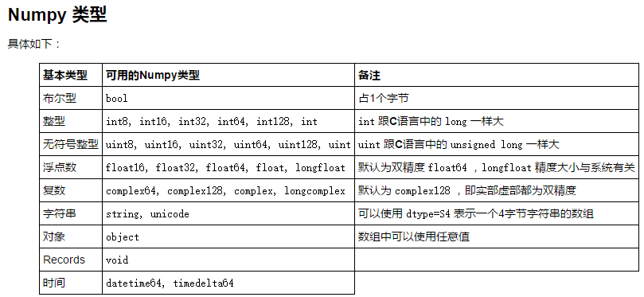

本文主要是对python数据分析领域的numpy、pandas、数据可视化基础的学习。
本文最早发于2018-02-02日，现对原文重新进行整理，主要参考《利用python进行数据分析》
Numpy <<=
pandas
数据可视化
概述
numpy可以归结为：N维数组，以及定义在其上的操作。
N维数组为定义在其上的各种运算做了基础
这个归纳确实没错，这一次可以再深入一下。定义在ndarray上的操作可以分成：1. 基本函数操作，2. 系统操作（文件），3.基本算数方法，4. 统计方法，5. 线代方法
基本函数操作是把ndarray看成数据，定义在其上的基本的函数，比如切片、类型、形状、排序、生成等；系统操作主要是文件的操作，这里其实还是很浅，没有与数据库关联；基本算数方法，比如绝对值、平方、开方、exp、log、sin、cos等方法；统计方法sum、mean、std、var等；线代方法：dot、trace、det、eig、inv、qr、svd、solve等
对于数据分析，应该主要针对后边2种方法。
Numpy 有两种基本对象：ndarray (N-dimensional array object) 和 ufunc (universal function object)。ndarray 是存储单一数据类型的多维数组，而 ufunc 则是一种对ndarray中的数据执行元素级运算的函数。
基本函数
array基本属性
tpye(a) #数组的属性
a.dtype #数组元素的属性
a.shape #a的形状
a.size #a中元组个数
a.nbytes #a所有元素所占的空间
a.ndim #a的维数
生成
arange
arange(start, stop=None, step=1, dtype=None)linsapce
linspace(start, stop, N)
linspace第三个参数是个数，arange第三个参数是步长
产生 N 个等距分布在 [start, stop]间的元素组成的数组logspace
logspace(start, stop, N)
产生 N 个对数等距分布的数组，默认以10为底，start是10的start次方的意思meshgrid
产生一网格
x_ticks = np.linspace(-1,1,5)
y_ticks = np.linspace(-1,1,5)
x,y = np.meshgrid(x_ticks, y_ticks)
(x,y)就可以组成二维坐标中，从-1，1范围内的网格。
可以用作三维图中做图。
默认为 indexing=’xy’ 即笛卡尔坐标，对于2维数组，返回行向量 x 和列向量 y
或者使用 indexing=’ij’ 即矩阵坐标，对于2维数组，返回列向量 x 和行向量 y。ogrid/mgrid
ogrid 与 mgrid 的区别在于：
ogrid 相当于 meshgrid(indexing=’ij’, sparse=True)
mgrid 相当于 meshgrid(indexing=’ij’, sparse=False)1
x, y = np.ogrid[-1:1:.5, -1:1:.5] #x是列，y是行。0.5是步长
我们在 step 的位置传入一个复数 5j ，表示我们需要一个 5 个值的数组，此时返回值就会包含 end 的值。5j的意思就是需要5个值。
ones/zeros/empty
1
2
3
4np.zeros(3)
np.ones([2,3], dtype=np.float32)
a = np.empty(2) #此时a是随机值
a.fill(5)ones_like,empty_like,zeros_like
1
2
3empty_like(a)
ones_like(a)
zeros_like(a)产生一个跟 a 大小一样，类型一样的对应数组。
identity
indentity(n, dtype=float64)
产生一个 n 乘 n 的单位矩阵：r_,c_：使用 r_ / c_ 来产生行向量或者列向量。
1
2np.r_[0:1:.1]
np.c_[1:3:5j]where
当只有一个参数时候，返回的满足条件的索引，组成的元组。对于2维，where返回值第一个元素对应axis0，第二个对应axis1。
1
2a = array([0,2,12,5,20])
where(a>10)[0] #array([2, 4], dtype=int64)where可以有3个参数，比如一个由随机数生成的矩阵，希望将正值替换成1，负值替换成-1
1
2arr = np.randm.randn(4,4)
np.where(arr>0, 1, -1)这里有点像三目运算
随机数
np.random.rand(10),正态分布：平均值0、标准差1
np.random.normal(size=(4,4)) 标准正态4*4
类型
类型值得是ndarray中元素的类型，也就是dtype的类型，包括：
| 类型 | 类型代码 | 说明 |
|---|---|---|
| int8、unit8 | i1、u1 | 1个字节的整数 |
| int16、unit16 | i2、u2 | 2个字节的整数 |
| int32、unit32 | i4、u4 | 4个字节的整数 |
| int64、unit64 | i8、u8 | 8个字节的整数 |
| float16 | f2 | 半精度浮点 |
| float32 | f4或f | 标准单精度浮点 |
| float64 | f8或d | 标准双精度浮点 |
| float128 | f16或g | 扩展精度浮点 |
| complex64 | c8 | 两个32位浮点表示的复数 |
| complex128 | c16 | 两个64位浮点表示的复数 |
| complex256 | c32 | 两个128位浮点表示的复数 |
| bool | ? | 布尔 |
| object | O | 对象类型 |
| string… | S | 固定长度字符串，如10字节S10 |
| unicode… | U | 固定长度unicode、U10 |
指定类型
1
2
3a = array([0,1,2.1,3], dtype=float32)
a.tofile('foo.dat',dtype=uint8)
b = fromfile('foo.dat',dtype=uint8)
asarray()
1
2
3
4a = array([1.5, -3])
b = asarray(a, dtype=uint8)
c = asarray(a, dtype=float32)
c is a #True但当类型相同的时候，asarray 并不会产生新的对象，而是使用同一个引用：
astype()
1
b = a.astype(float32)
另外，astype 总是返回原来数组的一份复制，即使转换的类型是相同的：
view()
1
2a = array([1,2,3,4], dtype=int32)
b = a.view(uint8)view 会将 a 在内存中的表示看成是 uint8 进行解析：
复数
1
2
3
4a = array([1+1j, 2,3,4])
a.real #实部
a.imag #虚部
a.conf #共轭其他一些类型函数

切片
切片
1
2a = array([1,2,4,6,8])
a[1:] - a[:-1] #array([2,4,6,8])-array([1,2,4,6]) = array(1,2,2,2)
注意如python的list不同，ndarray的切片是原址的,主要是Numpy目的是处理大数据，这样做性能更好。
1 | arr = np.arange(10) |
ps：numpy提供了arr[5:8].copy()来进行复制操作
切片索引
a[1,3]
#1是行索引，3是列索引，中间用逗号隔开，事实上，Python会将它们看成一个元组(1,3)，然后按照顺序进行对应。
其实就是第一是行，第二个是列。是按[]来算维数,从外往里数对于高维的数组，可以在不同轴上进行切片
1
2
3
4
5
6arr2d = np.array([1,2,3],[4,5,6],[7,8,9])
arr2d[:2, 1:]
# array([[2,3],[5,6]])
arr2d[:, :1]
# array([[1], [4], [7]])布尔索引
布尔索引是在索引上传入布尔数组，来确定某一轴上的数据可见如否。主要用于实际场合，假如一个存储数据的数组，一个存储姓名的数组，然后根据姓名对数据进行查询。
1
2
3
4
5
6names = np.array(['Bob', 'Joe', 'Will')
data = np.randm.randn(3,4)
names == 'Bob' # array([True,False,False])
data[names=='Bob'] # 只选择第一行花式索引
1
2
3
4
5a = arange(0,80,10) # 跟range一样
from numpy.random import rand
a = rand(10)
mask = a>0.5 #array([True,False,True,False...])
a[mask]
形状
tranpose()转置
a.tranpose() = a.Tshape数组属性
reshape数组方法
newaxis
1
2
3a = arange(3)
y = a[newaxis,:]
x = a[:, newaxis]flatten()
将多维转为1维，返回的是复制，不改变原来的ravel
a.ravel()即可
也是将多维变成一维,与faltten不同的是,返回的是view,修改会改变原来的数组squeeze()去除多余轴
1
2
3
4a = arange(6)
a.shap(2,1,3)
b = squeeze()
b.shap() #2,3将所有长度为1的维度去掉concatenate
concatenate((a1,a2),axis=0/1)
在轴上去连接z = array((x,y))增加一个维度
= vstack/hstack/dstackflat
a.flat，返回的是迭代器
a.flat[:]
是一个viewatlast_1d/atlast_2d
1
2
3a = array([1,2,3])
b = atlast_2d(a)
b.shape填充
a.fill(-4.8) #array([-4,-4,-4,-4]),将-4.8转成-4
但是与列表不同，数组中要求所有元素的 dtype 是一样的，如果传入参数的类型与数组类型不一样，需要按照已有的类型进行转换。
排序
sort：类函数与函数
当是类函数时，改变原数组；类函数不改变argsort：类函数与函数
升序排列的下标。
当有2个类表相关时，比较好用searchsorted
1
2
3sorted_array = linspace(0,1,5)
values = array([.1,.8,.3,.12,.5,.25])
searchsorted(sorted_array, values)searchsorted 返回的值相当于保持第一个数组的排序性质不变，将第二个数组中的值插入第一个数组中的位置：
例如 0.1 在 [0.0, 0.25) 之间，所以插入时应当放在第一个数组的索引 1 处，故第一个返回值为 1。
向量化函数
就是将自定义的函数能够对数组中每个元素起作用
1 | def sinc(x): |
文件操作
字符串转换
- s = a.tostring()
- a = np.fromstring(s, dtype=np.uinit8)
存储与加载
文本文件savetxt/loadtxt
二进制文件save/load
1 | loadtxt(fname, dtype=<type 'float'>, |
delimiter 就是刚才用到的分隔符参数。
skiprows 参数表示忽略开头的行数，可以用来读写含有标题的文本
1 | data = np.loadtxt('myfile.txt', |
1 | import datetime |
结构化数组
就是数据库的表，将shema用类型来表示
这里定义的mass、vol像是列名
示例1
1 | my_dtype = np.dtype([('mass', 'float32'), ('vol', 'float32')]) |
示例2
1 | person_dtype = np.dtype([('name', 'S10'), ('age', 'int'), ('weight', 'float')]) |
示例3：嵌套类型
1 | particle_dtype = np.dtype([('position', [('x', 'float'), |
记录数组
与结构化数组很像，简直就一样
这里定义的mass、vol像是列名
1 | partical_dtype = np.dtype([('mass', 'float'), |
也看可以通过域来查询
particals_rec[‘mass’]
可以将结构化数据转为记录数据
particals = np.array([(1,1), (1,2), (2,1), (1,3)],
dtype = partical_dtype)
使用 view 方法看成 recarray ：
particals_rec = particals.view(np.recarray)
并没有发现记录数组网上
内存映射
help(memmap)的内容足够说明内存映射：
Memory-mapped files are used for accessing small segments of large files
on disk, without reading the entire file into memory.
内存映射也是一种处理文件的方法，主要的函数有：
memmap
frombuffer
ndarray constructor
1 | memmap(filename, |
mode 表示文件被打开的类型：
r 只读
c 复制+写，但是不改变源文件
r+ 读写，使用 flush 方法会将更改的内容写入文件
w+ 写，如果存在则将数据覆盖
offset 表示从第几个位置开始。
基本数学方法
基本方法
| 函数 | 说明 |
|---|---|
| abs、fabs | 绝对值 |
| sqrt | 平方根 |
| square | 平方 |
| exp | 指数 |
| log、log2、log10 | 对数 |
| log1p | log(1+x) |
| sign | 正数为1,负数为-1 |
| ceil | 大于该数的最小整数 |
| floor | 小于该数的最大整数 |
| rint | 四舍五入 |
| isnan | NaN为true |
| isfinite、isinf | 是否有限、无限 |
三角函数
| 函数 | 说明 |
|---|---|
| cos、sin、tan | 三角函数 |
| cosh、sinh、tanh | 双曲函数 |
| arccos、arcsin、arctan | 反三角 |
| arcsinh、arccosh、arctanh | 反双曲 |
逻辑函数
| 函数 | 说明 |
|---|---|
| logical_and、logical_or、logical_not | 逻辑与或非 |
| bitwise_and、bitwise_or、bitwize_xor | 位与、或、异或 |
集合函数
| 函数 | 说明 |
|---|---|
| unique(x) | 返回唯一集合 |
| intersec1d(x,y) | 交集 |
| union1d(x,y) | 并集 |
| in1d(x,y) | x元素是否在y中 |
| setdiff1d(x,y) | x-y，在x中但不在y中 |
统计方法
二维数据拥有两个轴：第0轴沿着行的垂直往下，第1轴沿着列的方向水平延伸。
axis = 0 沿行垂直往下
axis = 1 沿列水平往右
| 方法 | 说明 |
|---|---|
| sum | 求和 |
| prod | 乘积 |
| mean | 平均值 |
| std | 标准差 |
| var | 方差 |
| min、max | 最值 |
ptp: 最大值与最小值之差 |
| argmin、argmax | 最值的索引 |
| cumsum | 累积和 |
| cumprod | 累计积 |
线代
基本
| 方法 | 说明 |
|---|---|
| diag | 以一维的方式返回对角元素 |
| dot | 矩阵乘法 |
| trace | 对角线元素和 |
| det | 行列式 |
| eig | 特征值 |
| inv | 逆矩阵 |
| pinv | 伪逆矩阵 |
| qr | 计算QR分解 |
| svd | 奇异分解 |
| solve | 解Ax=b，A是方阵 |
| lstsq | 计算Ax=b的最小二乘解 |
矩阵
a = np.array([[1,2,3],[2,5,6],[1,2,4]]
np.mat(a)
a = mp.mat(‘1,2,3;4,5,6;7,8,9’)
a.I表示矩阵的逆矩阵
矩阵的运算呢？
array本身就是多维的，2维的时候就是matrix，这里介绍了为什么上边的martix介绍比较小，因为都用array代替。
array 还是 matrix？
Numpy 中不仅提供了 array 这个基本类型，还提供了支持矩阵操作的类 matrix，但是一般推荐使用 array：
很多 numpy 函数返回的是 array，不是 matrix
在 array 中，逐元素操作和矩阵操作有着明显的不同
向量可以不被视为矩阵
具体说来：
#， dot(), multiply()
array： -逐元素乘法，dot() -矩阵乘法
matrix： -矩阵乘法，multiply() -逐元素乘法
处理向量
array：形状为 1xN, Nx1, N 的向量的意义是不同的，类似于 A[:,1] 的操作返回的是一维数组，形状为 N，一维数组的转置仍是自己本身
matrix：形状为 1xN, Nx1，A[:,1] 返回的是二维 Nx1 矩阵
高维数组
array：支持大于2的维度
matrix：维度只能为2
属性
array：.T 表示转置
matrix：.H 表示复共轭转置，.I 表示逆，.A 表示转化为 array 类型
构造函数
array：array 函数接受一个（嵌套）序列作为参数——array([[1,2,3],[4,5,6]])
matrix：matrix 函数额外支持字符串参数——matrix(“[1 2 3; 4 5 6]”)
其优缺点各自如下：
array
[GOOD] 一维数组既可以看成列向量，也可以看成行向量。v 在 dot(A,v) 被看成列向量，在 dot(v,A) 中被看成行向量，这样省去了转置的麻烦
[BAD!] 矩阵乘法需要使用 dot() 函数，如： dot(dot(A,B),C) vs ABC
[GOOD] 逐元素乘法很简单： AB
[GOOD] 作为基本类型，是很多基于 numpy 的第三方库函数的返回类型
[GOOD] 所有的操作 ,/,+,*,… 都是逐元素的
[GOOD] 可以处理任意维度的数据
[GOOD] 张量运算
matrix
[GOOD] 类似与 MATLAB 的操作
[BAD!] 最高维度为2
[BAD!] 最低维度也为2
[BAD!] 很多函数返回的是 array，即使传入的参数是 matrix
[GOOD] AB 是矩阵乘法
[BAD!] 逐元素乘法需要调用 multiply 函数
[BAD!] / 是逐元素操作
当然在实际使用中，二者的使用取决于具体情况。
二者可以互相转化：
asarray ：返回数组
asmatrix（或者mat） ：返回矩阵
asanyarray ：返回数组或者数组的子类，注意到矩阵是数组的一个子类，所以输入是矩阵的时候返回的也是矩阵